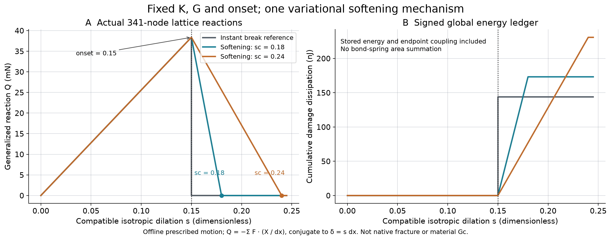
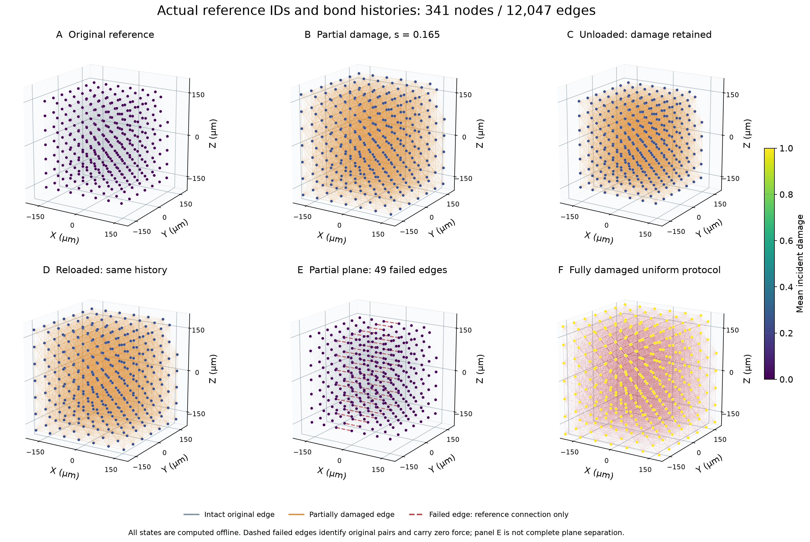
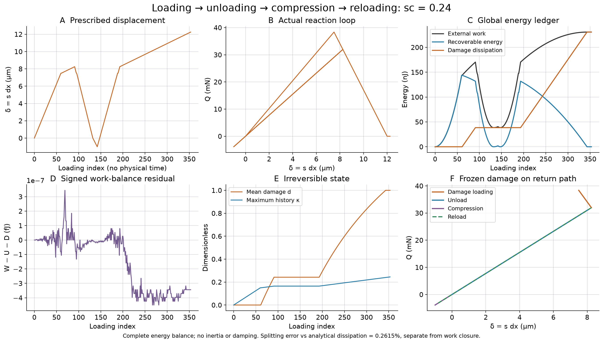
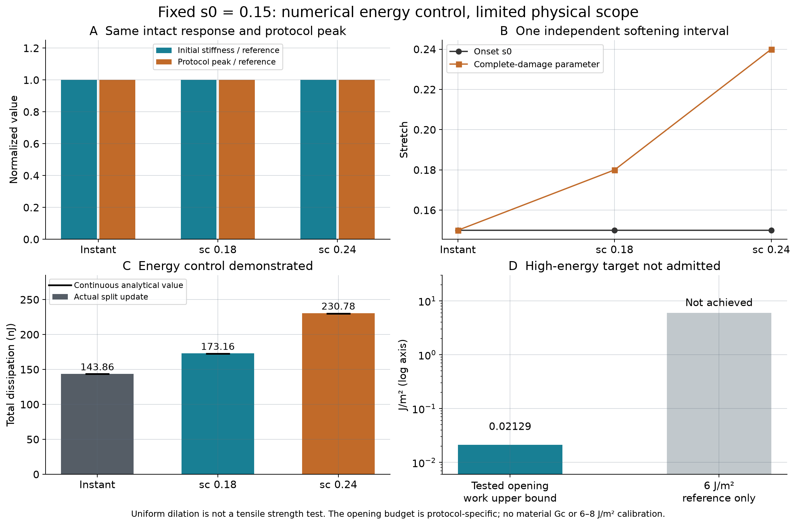

341 节点、12,047 原始键；一个变分柔度机制、两个软化终点。未损伤恢复、能量梯度、不可逆性与耗能可调通过。宏观强度、材料 Gc、血栓实验均未认证。未修改生产 LAMMPS。
Actual offline lattice reaction and global damage dissipation under compatible uniform expansion. Envelope excludes unloading branches, which appear in Fig3; instantaneous jump preserved.
SVG
Original full-precision coordinates and edge identities, partial damage, unloaded/reloaded irreversible states, actual partial plane, and fully damaged uniform protocol. Failed connections drawn dashed as identity markers, not active forces.
SVG
Full controlled displacement history and all-DOF external work; signed residual shown without clipping. Reversible unloading/reloading at fixed damage, no healing or unexplained energy source.
SVG
Same initial generalized stiffness and onset, distinct observed irreversible energies. Protocol peak equality does not certify macroscopic strength. Energy budget shown with clearly unachieved reference.
SVG